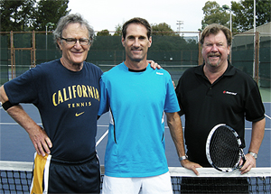
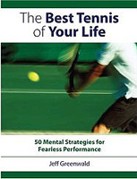

Previous: The Only Way to Win: What Our Academy Players Do | 🏠 Mental Game Home | Next: The Panic Signal
The Opportunity Attack
Comprehensive unified tennis knowledge base — Fundamentals, Stroke Analysis, Reference Library, and more
The Opportunity Attack
Jeff Greenwald
Sure, I learned to volley, but why?
For 33 years I tried to win points almost exclusively from the baseline. Ironically, I now realize one of my biggest problems was that I won quite a few matches this way-- including the world men’s 35 championships.
I was consistent, moved well, and developed a forehand that could inflict a good amount of damage. So, why would I ever consider doing anything different—like attacking the net?
Well, let’s just say my thinking has changed. In this article I will explain how and why—and at the same time outline a program that you can use just as I did to learn the opportunity attack at whatever your level.
A lot of coaches, of course, advise using more net play. But here is a slightly different approach, an approach proven in national competition. I have no doubt that, whatever your level, it can have the same value for your game as well.
My Story
I grew up on green clay in Connecticut. Then as a teenager, I pounded a million groundstrokes at the Bollettierri Academy.
I proved that I could win points at the net and I know you can too.
In all those years I may have learned how to hit a volley in practice, standing at the net. But in all honesty, I never really even considered using a volley to end a point. I worked on the volley because it would have seemed odd to never learn one of the basic strokes in tennis.
When it came to role models when I was growing up, it was either Borg or McEnroe. I chose Borg.
In my matches, I played the forehands and backhands that I felt most comfortable hitting. My focus on groundstrokes to the exclusion of just about every other shot in the game was a way of life.
Meanwhile, my father was having a series of coronaries on the sidelines when I wouldn’t follow a deep forehand to the net. Even when I saw a weak backhand I was not going to budge from the baseline. The few times that I experimented, it felt like a suicide charge, attacking naked and weaponless.
The groundstrokes that led to winning so many matches.
My mission was to do what I did well—run a lot, fight for every point and make one more shot over the net than my opponent. And to hit winners when that was possible. It was a fabulous plan that won me tons of matches over the years.
I went on to play number one on a division one college team. And I won several gold balls in national senior tennis events. I did well. But I now realize possibly not as well as I could have.
I now know that even as the number one men’s 35 and over player in the world, I still was leaving potential on the table. As much as it pains me to admit it, my dad may have had a point.
I certainly didn’t become a serve and volleyer. And I wouldn’t call it exactly all court play. The strength of game was still my groundstrokes.
Opportunity attacking: a new tactical variation.
What I would call it is opportunity attacking. Opportunity attacking means that when you are able to use your groundstrokes weapons to create a advantage, you move forward and end the point on relatively easy volleys or overheads.
Coming in when you have a big advantage off the ground means you can close without having to hit difficult midcourt volleys on a regular basis.
What Changed?
So how and why did this change happen? A few months ago, because my friend’s son was taking lessons from him, I met a coach in Tiburon, California named Paul Cohen.
My friend told me that Paul had worked with many great players years ago, including John McEnroe and Harold Solomon. Although 70 years old and making his living in the financial world, he was returning to playing and teaching tennis.
I have always been open to meeting new and interesting people and I was intrigued when Paul volunteered to come out to watch me play a set against my friend.

That’s me with the braintrust: Paul Cohen and Rod Heckelman.
From the instant I met Paul I could see that he was dancing to the beat of a very different drum. Within a minute of meeting me he asked to see my grip.
I thought to myself, “This guy is asking me about my grip at this stage of my playing career?” That wasn’t my last surprise.
So Cohen watched as I played a set against my friend, a solid 5.5 player. When I went up 5-1, Paul came over and said he’d seen enough. He smiled, looked us both earnestly in the eyes and said, “That was some of the dumbest tennis I’ve ever seen.”
Now many people I know in tennis, hearing that, would have been offended and immediately become defensive. Who is this guy? How dare he tell me something like that after just meeting me? I knew I was playing pretty well. Didn’t he realize I was one of the top players in the world in my age division?
But actually I was intrigued. “This guy doesn’t sugar coat his opinions,” I thought to myself.
Even at the pro level, a huge percentage of balls land short.
In the next five minutes he had my partner and me at the net and was looking closely at our grips. He then turned to me and says, “You mean to tell me with that forehand of yours and a backhand that is one of the best I’ve ever seen, you haven’t learned to close the court?”
I tried to ask him what he meant—close the court—but he put his hand up to stop me. “Have you even noticed how many short balls there are in this game?” he asked.
“Try actually noticing some time. Approximately 70% of balls land short at all levels of the game. With that forehand and return you should be closing all the time.”
Theoretically I couldn’t disagree. I know my father certainly wouldn’t.
We even got into a minor car wreck after one of my matches because he continued to press the issue while driving. Perhaps not coming to the net was an act of adolescent rebellion?
Was the net the new ground for fearless tennis?
But what would that actually feel like—to close the court and win points? That was a scary, almost incomprehensible thought.
Ironically, I had been obsessed for the past two decades with how we can all learn to break free from fear, play more aggressively and focus on the right things at the right time to produce our best tennis.
I produced Fearless Tennis, an audio cd on how to accomplish this, and more recently, I wrote about the same topics in my book: The Best Tennis of Your Life. (Click Here for more info.)
I wasn’t afraid of technical stroke change either. When I had problems with my serve, I asked John Yandell to video my motion, and altered my stance and my landing with greatly improved results. (Click Here.)
But none of this work included the concept of transitioning to an alternative style of play. As I reflected on this I realized that playing “fearless” tennis might have additional paths I had not considered. And maybe Cohen was pointing the next one out.
I had made previous technical changes to my serve.
Those were my thoughts, but that first meeting was my only meeting with Paul until after the National 40 Hardcourts at the beautiful La Jolla Beach and Tennis Club. I went into the tournament with an even more aggressive mindset than the year before, but I had no intention of attacking the net in the way Paul was suggesting.
As fate would have it, for the second year in a row I came in third, losing in three sets to the same player as the year before. The guy was a modern day human backboard.
Like a smart boxer he allowed me to win the first few rounds, pummeling him on the ropes until I was exhausted. But I was simply unable to keep the intensity up for the entire fight. I played my baseline game well, but it wasn’t enough.
Were opportunity approaches the difference between third place and the championship?
I was disturbed by this match. Afterwards I decided I was open and ready to change or mix-up my game anyway I could. So I met Cohen again.
I told him about the match and showed him a few points on video. He told me, “Losing in the semi-finals is nothing to write home about.” I didn’t mind because I felt the same way.
The idea that I was still playing below my capability began to haunt me. While I believed that I had bridged much of this gap with my upgraded mental game over the years, the new elephant in the room was a flawed tactic.
I now realized this may have held me back more than anything else in my entire career. I began to acknowledge the power of the unconscious comfort zone I had been living in all those years.
So I decided to commit. For the eight weeks before the ITF Senior World Championships, Cohen trains me like a beginner. He demonstrated the short volley motion he wanted, then had me hit transition balls that I was forced to follow in.
The key pattern: a big forehand, an angled volley.
He showed me how to hit a deep groundstroke and then a short angled volley. He yelled at me when I made a tactical error but praised me when I hit a technically perfect volley to the right place.
As compared to traditional all court tennis, however, you assume the net only when you can close and take a commanding position that allows you to finish usually on one relatively easy ball hit with a decisive angle.
This is what makes it a different variation on playing the net, one that was built on my existing strengths. This is why I think that properly implemented it’s such a promising tactic for club players. Opportunity attacking leverages the deep court and creates an impossible defensive situation for opponent.
At the club level most players have stronger forehands and weaker backhands. But any exchange from the baseline where you have a clear advantage and can produce a short ball can yield the same result. It’s a matter of creating the right match at the right time to give yourself a commanding finishing shot with a relatively low degree of difficulty.
Opportunity attacking: creating commanding finishing shots.
Cohen’s praise appeared genuine, and I remember one email in particular. It felt good, but at the time I wondered if it was a bit over the top: “Some people are born to be tennis players, natural geniuses. You are one of these people. The sport comes naturally to you, and the ability you have is God given. I would guess you have not been on a tennis court with anyone who can relate to your assets - they are considerable.”
During the same period I was also talking to my friend Rod Heckelman, the tennis director at the Mt. Tam Racket Club in Marin county. He completely agreed with Paul’s theories, and also agreed to help me on court.
He did this by adding a series of his own drills. He also helped me own the idea of closing the court in my mind. In the days preceding the tournament we hit hundreds of approach sequences.
Rod’s first goal was get me more comfortable with the footwork.
He started me off with a drill focusing on the split step and getting comfortable and on balance before moving into the volley. This helped me overcome my previous fear of approaching the net as a suicide charge.
Another pattern we worked on was the approach followed by the overhead, but a particular variation. Rather than trying to power the ball, I worked on hitting the overhead with more slice and creating the same type of short angles I was using on the volleys.
And so off I went to the men’s 40’s World Championships. To cut to the chase, I won the title. During the tournament I came to the net 33 times (about 30 times more than my typical average.) This included winning set point at the net in the first set of the final.
Some of the spectators who had watched me play previously seemed shocked. After winning the final, my opponent had these word: “That was too good.”
Another approach variation, finishing with a angled, slice overhead.
Part of me was in disbelief as well that I may have played my entire life in such a limited way. Another part of me was excited to be succeeding with something new—and to have the chance to share it with other players in my coaching and on Tennisplayer.
It’s interesting because I have always embraced change—moving back and forth from home to the Bollettierri Academy, packing and unpacking my bag since I was 12 years old, and changing schools four times in my life.
But, when it came to my tennis game, it stayed remarkably the same for years. It’s as though the groundstroke game and forehand weapon were cast in cement to keep them from shifting—ever.
“I just need to do the things I do better,” I used to tell myself. “I just need to hit my forehand down the line more often, hit harder, and get my first serve percentage up.” It never occurred to me that, while all of this was well intentioned, it was a bit like moving the deck chairs around on the Titantic.
It was time to get off the deck of the Titanic and up to net.
Of course, that is an overstatement because I never really sank. I just didn’t reach the heights that may have been possible with the right vision and a coach that could hold me accountable.
So there are the facts, and the relatively simple drills I used to add this incredible dimension to my game, and the ones that hopefully, you can use as well. Again this is not just theory. The facts are that I was able to put theory into practice successfully at the highest level of senior tennis in the world.
In my next piece I will go a little deeper psychologically into that process and take you through the mind of a baseliner. My goal there will be to show you more about the mental aspects of getting out of your comfort zone you can play the best tennis of your life, regardless of your age. Stay Tuned!

The Best Tennis of Your Life
Learn how to play with freedom and win more matches! In his new book Jeff Greenwald, an elite international seniors player, coach, and psychotherapist, outlines 50 specific mental strategies to play the best tennis of your life. See how to embrace pressure, maintain confidence, and increase your focus and intensity. Jim Loehr calls Jeff's book: "a real contribution to the field of applied sports psychology." Click Here to Order!

Jeff Greenwald, M.A., MFT is a nationally recognized sport psychology consultant. Jeff has worked as a consultant for the United States Tennis Association and trains numerous players around the world on the mental game. As a player in the men's 35 and over age division he attained an ITF #1 world ranking, as well as the #1 ranking in men's singles and doubles in the United States.
Greenwald is the author of "The Best Tennis of Your Life" published by Betterway. Click Here to order. Jeff has a private practice based in San Francisco and Marin County, California. He can be reached at 415-640-6928 or by email at jeff@mentaledge.net. You can also visit Jeff's website at www.mentaledge.net.
Source: tennisplayer.net archive — The Opportunity Attack.docx (John Yandell teaching library, 2002-2022). Extracted and rendered as HTML for Tennis Future Lab.